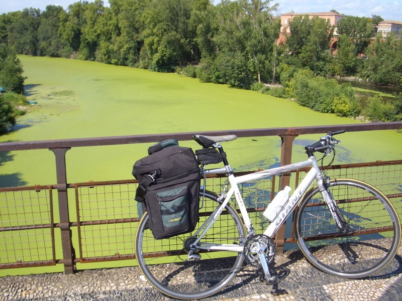
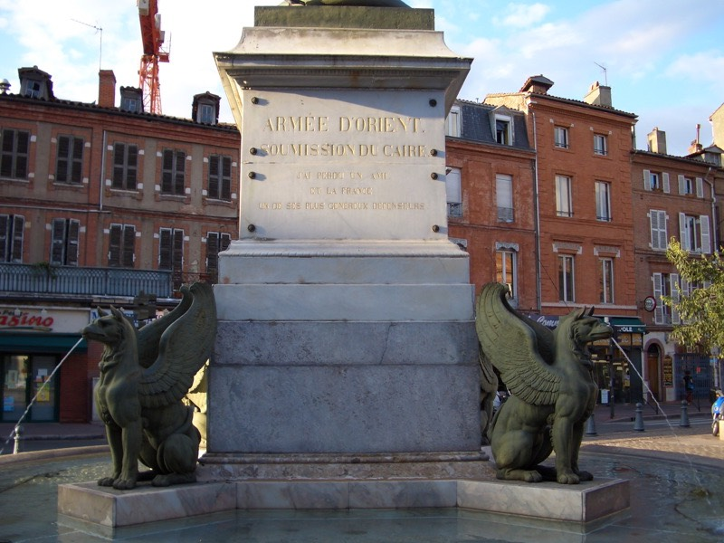
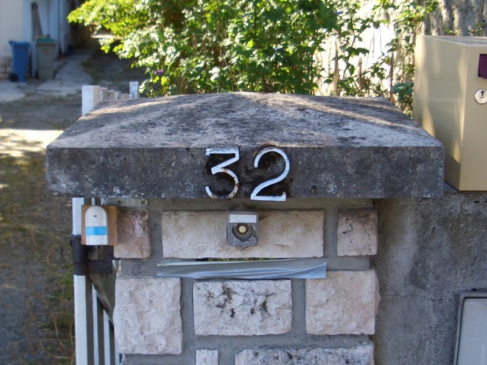

我真是個天大的豬頭，晚上出去上網要戴帽子時，怎麼找都找不到。
老天爺呀∼又被我遺忘在哪個旅館了呢？ /_\ 也不知道弄丟幾天了，現在才發現？
再這樣下去，行李就會越來越簡便了∼搞不好掉東西是件值得慶幸的事？ :)
老天爺聽到了我的吶喊，所以今天是涼爽的陰天，雲不多，但剛好可以擋住太陽。
最適合騎車的天氣不過如此了∼可惜睡太晚，沒能把握時間早點出門。
拖到將近中午十一點，才在旅館附近的超市買東西吃，準備出發。
心裡想，反正土魯斯離這邊不遠麻∼了不起一百公里囉，不趕著走，因為再怎麼趕都還是慢了一小步。
打算買個麵包，吃好一點就再配一大瓶果汁，就是豐盛的早餐了。
結果一進到超市，就聞到好香好香的味道在飄散，不自覺的就被吸引過去。
超市附設有肉鋪，肉鋪又附設有熱食部，剛出爐的烤雞，光是聞味道就令人垂涎三尺。
擦乾口水，盯著烤雞猛瞧，該不該買呢？
內心的聲音A『好香呀.....黃金烤雞，不吃真是對不起自己...』
內心的聲音B『可是應該很貴吧？而且一大早就吃這麼豪華，會遭受譴責的。』
內心的聲音A『說得也是，早餐就吃烤雞，那中午就要吃烤全牛囉？』
內心的聲音B『隨便啃點乾麵包意思意思就算了。』
嗯，有點打消了吃烤雞的念頭。
內心的聲音C『等等，既然吃烤雞當早餐太奢侈，那不如買來當午餐吃吧？』
內心的聲音A『對呀！』
內心的聲音B『有道理！』
老闆，我要這一隻，多少錢？
秤重過後，7.86歐元，也還好，沒想像中那麼貴，多拿一個塑膠袋，等等可以吃手扒雞。
買了烤雞當午餐，那早餐還是得採購一下，一大包的甜麵包，2.8歐元，10個。
一個折台幣約10元，比之前吃的牛角麵包貴一點，但是奶油巧克力口味的還挺不錯吃。
看看手錶，十一點剛過，是吃午餐的時候了，再說烤雞冷了就不好吃了，開動吧∼ :D
所以今天的早午餐相當的豐盛，吃了整隻的手扒雞，現在回想起來，肚子又餓了 =.=
吃飽後抹乾淨嘴邊的油光，整個人洋溢著幸福的感覺∼天天這麼吃大餐的話該多好呢。
走吧走吧∼吃飽了就可以上路了，看到路標，果然不超過100公里，剛好是99。
繼續走昨天的N113，半路轉D958繞去MONTAUBAN參觀一下，然後再繞回N113。
轉個圈子，可就不只100公里這麼近囉∼幸好這地區地勢很平坦，沒什麼爬坡的路段，
騎乘起來相當的有效率，不知不覺都能騎到目的地，放輕鬆騎就好了。
核能發電廠？
法國版的花木蘭，一百多年前的人物了。
可愛的時鐘，除了時間之外，還可以顯示天氣。
沿路繼續是豐收的桃子，熟到掉了滿地都是，好可惜呀....
石頭跟磚頭建的橋，上頭可是高速火車行經的路線，真佩服他們的路線規劃，不用全部重建一條。
磚頭用的好，連教堂都能蓋一整棟出來。
下午一點半，經過一條叫Le Tarn的河，河面上都是綠色的浮萍，很漂亮。

兩邊的橋頭還有小小間的房子，古代衛兵站崗的地方？
下午三點才騎到MONTAUBAN，逛了一小時，其中有大半的時間都坐在路邊上網。
昨天沒睡好，落枕了...
相當厲害，這棟全部都是用紅色專頭蓋的大教堂。除了磚頭似乎就沒有別的建材了。
樑上四君子
離開MONTAUBAN，得繞路，走D928接回N113，再轉N20。
這才發現阿讓到土魯斯，還是得騎上將近140公里才會到，沒想像中那麼近，理想跟現實是有差距的。
綠油油的桌布系列趴兔：
不知道這裡是哪裡，但一路上都是像這樣的人工運河，不是自然河道，也有船跑來跑去的。
幸運的找到水龍頭準備裝水時，一直聽到狗吠的聲音，有點怕跑出一隻大狼狗來咬我。
想說趕快裝一裝趕快繞跑∼不宜久待，水裝滿之後，狗也跑出來了∼∼救命呀∼∼別咬....疑？是你嗎？
就當它是高粱吧
皇天不負苦心人，晚上七點半，到了巨大的城市，土魯斯。
真的是暴大的！而且它的路標我都看不懂！繞來繞去連要去市中心都沒個方向可以抓。
可以想見的是，土魯斯是單車騎士的王國，單車專用到處處都是，快要佔領整個城市了。
土魯斯內有也運河流經，應該挖了好幾百年了，河岸都種著高聳的大樹，落葉繽紛，在河畔散步真是享受。
漸漸有市中心的感覺出現了。

今天比較特別的是，過夜的地點已經決定，所以不用四處探訪旅館。
但相對的是，在人生地不熟的情況下，從地址來找地點，是極度困難的事情。
幸好地點說明的很詳細，所以只花了一個小時就找到過夜的地方。

我到了，妳在哪？ :)
晚餐吃光了所有妳留下的東西，法國麵包、鮪魚罐頭、番茄、優格、蘋果派還泡了杯熱茶。
今日的花費就只有早上的烤雞跟麵包，省下了一千多台幣的住旅館費用。
正如妳所說，從窗戶可以鳥瞰這邊的夜景。
只可惜，擦身而過的緣份。